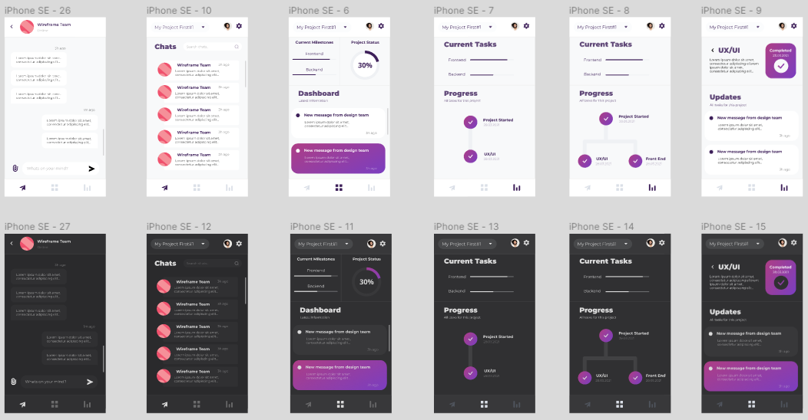

Description :
Livid was a project for a web and mobile UI designs of a progress tracking app. The aim was to create a minimalistic interface for the user as well as a onboarding page.
Livid - UX/UI design app

Technologies used:
